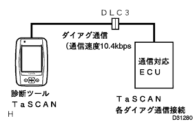
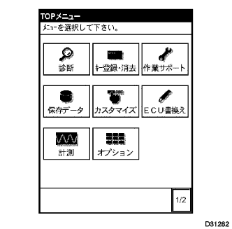
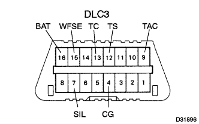
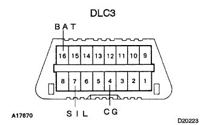

How to troubleshoot the ECU control system new diary system |
|  |
The new diameter system is a new failure diagnosis system that supports the in -vehicle electronics system such as TCCS, Bean, which is more advanced and complicated.The function of this failure diagnostic system can be used by the diagnostic tool TASCAN.
The diagnostic tool TASCAN corresponding to this new diagnosis has the functions shown in the table below.
| function | overview |
| Basic inspection | Basic inspection of engine and ECT is possible (engine, ECT only) |
| Trouble shoot |
|
| ECU data monitor | Confirmation, recording, and playback of ECU data is possible |
| Active test | Voluntary driving of the actuator is possible |
| Customization | Setting according to the user's request, such as changing the timer time of the illuminated entry system |
| General -purpose measurement | Equipped with digital tester (voltage, resistance, pulse) and oscilloscope function |
| A | B | C | |
| Diagnostic code reading (Normal mode) | ○ | ○ | ○ |
| Diagnostic code reading (Check mode) | ○ | ○ ( * 1) | - |
| Freeze frame data (Computer data in the event of a failure) Reading | ○ | ○ ( * 2) | - |
| Computer data real -time Read and save/display | ○ | ○ | - |
| Active test | ○ | ○ | - |
|
Connection with vehicles
Connect to the DLC3 (data link connector No.3) installed near the driver's feet.
|  |
Operation of the diagnostic tool TASCAN
When the power switch of the diagnostic tool TASCAN is turned on, the menu screen is displayed, so select the items you want to implement arbitrarily, and then proceed with the dialogue with the screen.
|  |
Functions have been consolidated in DLC3 (installed at the lower part of the driver's instrument panel) with the adoption of the new diary system.
DLC3 terminal name and function
| Terminal name | function |
| BAT | Battery power supply |
| WFSE | ECU program rewriting |
| TC | Diag code (lamp) output instruction |
| TS | Test mode output instruction |
| TAC | Engine speed output |
| SIL | New diagram communication with each computer |
| CG | Bodies ground |
 |
TASCAN's power indicator non -lit
|  |
Connect Tascan to other vehicles and start Tascan.
| Operating state | Bug | Checkpoint |
| When Tascan's power indicator lights up | Vehicle side |
|
| When the TASCAN power indicator does not turn on | TASCAN body | - |
Do not display all ECU names that support the new diary when the main menu is displayed.
If you turn off the IG switch and TASCAN power switch once, start Tascan again, press the [Return] key, display the main menu, connect Tascan to other vehicles and connect Tascan to the main menu.Is displayed.
| Operating state | Bug | Checkpoint |
| Do not display all ECU names | TASCAN body | - |
| When tascan works normally | Vehicle side |
|
When the power switch of the IG switch and Tascan is turned off once, the tascan is started again, the [Return] key is pressed to display the main menu, and some ECU names are not displayed.
| Operating state | Bug | Checkpoint |
| Do not display some ECU names | Vehicle side |
|